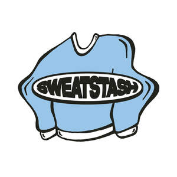

Trade Mark Journal No.2026/011 13 March 2026
UK00004349618 5 March 2026 (25)

- Class 25
- Clothing; Knitwear [clothing]; Jackets [clothing]; Ready-to-wear clothing; Garments for protecting clothing; Linen clothing; Clothes; Jerseys [clothing]; Denims [clothing]; Shorts [clothing]; Leather clothing; Clothing of leather; Parts of clothing, footwear and headgear; Knitted clothing; Windproof clothing; Hoods [clothing]; Embroidered clothing; Rainproof clothing; Waterproof clothing; Casual clothing; Jackets being sports clothing; Jackets (Stuff -) [clothing]; Stuff jackets [clothing]; Bottoms [clothing]; Ready-made clothing; Clothing for leisure wear; Leisure clothing; Clothing for sports; Sports clothing; Athletic clothing; Tops [clothing]; Clothing for cycling; Weatherproof clothing; Water-resistant clothing; Clothing for skiing; Thermal clothing; Chaps (clothing); Men's clothing; Fishing clothing; Dance clothing; Trousers; Leggings [trousers]; Trousers shorts; Leather (Clothing of -); Corduroy trousers; Jogging bottoms [clothing]; Casual trousers; Waterproof trousers; Furs [clothing]; Denim pants; Men's and women's jackets, coats, trousers, vests; Ski trousers; Golf clothing, other than gloves; Denim jackets; Pants; Corduroy pants; Jeans; Skirts; Pleated skirts; Miniskirts; Dresses; Short trousers; Tank-tops; Sleeveless jackets; Cardigans; Tracksuit tops; Tops; Rain trousers; Camisoles; Shorts; Quilted jackets [clothing]; Knitted tops; Long sleeved vests; Vest tops; Hooded tops; Jogging tops; Capri pants; Chino pants; Jogging pants; Sweat pants; Yoga pants; Camouflage pants; Cargo pants; Waterproof pants; Warm-up pants; Snow pants; Weatherproof pants; Track pants; Wind pants; Sports pants; Trousers for sweating; Snowboard trousers; Sweatpants; Denim jeans; Sweat shorts; Tracksuit bottoms; Blue jeans; Walking shorts; Hooded sweat shirts; Sweat shirts; Sweat bottoms; Yoga bottoms; Long-sleeved shirts; Turtleneck shirts; Shirts; Short-sleeve shirts; Short-sleeved shirts; Polo shirts; Knit shirts; Short-sleeved T-shirts; Casual shirts; Sport shirts; Printed t-shirts; Sweatshirts; Hooded sweatshirts; V-neck sweaters; Turtleneck sweaters; Turtleneck pullovers; Fleece shorts; Fleece pullovers; Hoodies; Hooded pullovers; Fleece jackets; Knit jackets; Sweaters; T-shirts; Turtleneck tops; Sleeved jackets; Camouflage shirts; Polo sweaters; Fleece vests; Sweatshorts; Beanie hats; Fleece tops; Pullovers; Football shirts; Camouflage jackets; Beanies; Sheepskin jackets; Jumpers [sweaters]; Gym shorts; Sports shirts with short sleeves; Sports shirts; Tracksuits; Sweatsuits; Jogging outfits; Jogging bottoms; Sportswear; Gymwear; Sneakers; Warm-up jackets; Knitwear; Jackets; Windproof jackets; Suede jackets; Leather jackets; Rainproof jackets; Bomber jackets; Waterproof jackets; Motorcycle jackets; Wind-resistant jackets; Weatherproof jackets; Shell jackets; Fur jackets; Padded jackets; Snowboard jackets; Reversible jackets; Ski jackets; Rain jackets; Casual jackets; Sweat jackets; Fur coats and jackets; Polar fleece jackets; Wind jackets; Heavy jackets; Leather pants; Hunting jackets; Track jackets.
Sweatstash Ltd